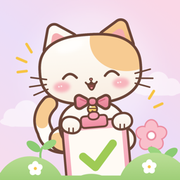

Terms of Use (EULA)
Effective date: November 21, 2026
Agreement
These Terms of Use apply to the BloomTask app. By downloading or using BloomTask you agree to them. BloomTask is licensed to you under Apple's Standard Licensed Application End User License Agreement (the “Standard EULA”), which is part of these terms. If anything here conflicts with the Standard EULA, the Standard EULA applies.
BloomTask Plus subscriptions
BloomTask Plus is an optional auto-renewable subscription, offered monthly or yearly. Prices are shown in the app in your local currency before you buy. Payment is charged to your Apple Account when you confirm the purchase. The subscription renews automatically unless you cancel it at least 24 hours before the end of the current period; your account is charged for renewal within 24 hours before the period ends. You can manage or cancel your subscription any time in your Apple Account settings. Refunds are handled by Apple.
Free features
Tasks, reminders, focus sessions, widgets, the companion Sakura and the Cozy Bedroom are free. If your Plus membership ends, nothing is deleted: Plus content simply waits until you subscribe again.
Your content
Your tasks and other content belong to you. They are stored on your device and, if you use iCloud, in your private iCloud database. See the Privacy Policy.
Fair use
Please use BloomTask only for lawful, personal purposes and don't try to copy, modify, reverse-engineer or resell the app or its artwork, characters and sounds, which are protected by copyright.
Not medical advice
BloomTask is a productivity companion. It is not a medical device and does not diagnose, treat or replace professional care for any condition.
Disclaimer
BloomTask is provided “as is”. To the extent permitted by law, we are not liable for indirect or incidental damages, or for lost data, arising from the use of the app. Nothing in these terms limits rights you have under consumer law.
Changes
We may update these terms. The current version is always on this page with its effective date.
Contact
Questions? Open an issue at github.com/TarikCinetci/BloomTask-legal/issues.
Kullanım Koşulları (EULA)
Yürürlük tarihi: 21 Kasım 2026
Sözleşme
Bu Kullanım Koşulları BloomTask uygulaması için geçerlidir. BloomTask'ı indirerek veya kullanarak bu koşulları kabul etmiş olursun. BloomTask sana Apple'ın Standart Lisanslı Uygulama Son Kullanıcı Lisans Sözleşmesi (“Standart EULA”) kapsamında lisanslanır; bu sözleşme bu koşulların bir parçasıdır. Buradaki bir hüküm Standart EULA ile çelişirse Standart EULA geçerli olur.
BloomTask Plus abonelikleri
BloomTask Plus, aylık veya yıllık olarak sunulan isteğe bağlı, otomatik yenilenen bir aboneliktir. Fiyatlar satın almadan önce uygulamada yerel para biriminle gösterilir. Ödeme, satın almayı onayladığında Apple Hesabından alınır. Abonelik, mevcut dönemin bitiminden en az 24 saat önce iptal edilmedikçe otomatik olarak yenilenir; yenileme ücreti dönem bitmeden önceki 24 saat içinde hesabından alınır. Aboneliğini istediğin zaman Apple Hesabı ayarlarından yönetebilir veya iptal edebilirsin. İadeler Apple tarafından yapılır.
Ücretsiz özellikler
Görevler, hatırlatmalar, odak seansları, widget'lar, Sakura dostu ve Sıcacık Yatak Odası ücretsizdir. Plus üyeliğin biterse hiçbir şey silinmez; Plus içerikleri yeniden abone olana kadar seni bekler.
İçeriğin
Görevlerin ve diğer içeriklerin sana aittir. Cihazında ve iCloud kullanıyorsan özel iCloud veritabanında saklanır. Ayrıntılar için Gizlilik Politikası'na bak.
Adil kullanım
BloomTask'ı yalnızca yasal ve kişisel amaçlarla kullan; uygulamayı ya da telif hakkıyla korunan çizimlerini, karakterlerini ve seslerini kopyalamaya, değiştirmeye, tersine mühendislik yapmaya veya yeniden satmaya çalışma.
Tıbbi tavsiye değildir
BloomTask bir üretkenlik yardımcısıdır. Tıbbi bir cihaz değildir; herhangi bir durumu teşhis etmez, tedavi etmez ve profesyonel desteğin yerini tutmaz.
Sorumluluk reddi
BloomTask “olduğu gibi” sunulur. Yasaların izin verdiği ölçüde, uygulamanın kullanımından doğan dolaylı veya arızi zararlardan ya da veri kaybından sorumlu değiliz. Bu koşullar, tüketici mevzuatından doğan haklarını sınırlamaz.
Değişiklikler
Bu koşulları güncelleyebiliriz. Güncel sürüm, yürürlük tarihiyle birlikte her zaman bu sayfadadır.
İletişim
Sorun mu var? github.com/TarikCinetci/BloomTask-legal/issues adresinden bize yazabilirsin.
利用規約（EULA）
施行日：2026年11月21日
同意
本利用規約はBloomTaskアプリに適用されます。BloomTaskをダウンロードまたは利用することで、本規約に同意したものとみなされます。BloomTaskは、Appleの標準使用許諾契約（Standard EULA）に基づいて使用許諾され、同契約は本規約の一部です。本規約と標準EULAが矛盾する場合は、標準EULAが優先されます。
BloomTask Plusサブスクリプション
BloomTask Plusは、月額または年額で提供される任意の自動更新サブスクリプションです。価格は購入前にアプリ内で現地通貨で表示されます。お支払いは購入確定時にApple Accountに請求されます。現在の期間終了の24時間前までに解約しない限り自動更新され、期間終了前の24時間以内に更新料金が請求されます。サブスクリプションはApple Accountの設定からいつでも管理・解約できます。返金はAppleが対応します。
無料の機能
タスク、リマインダー、集中セッション、ウィジェット、仲間のSakura、ほっこりベッドルームは無料です。Plusが終了してもデータは削除されず、Plusのコンテンツは再登録まで保管されます。
あなたのコンテンツ
タスクなどのコンテンツはあなたのものです。デバイス内、およびiCloudを使う場合はあなた専用の非公開iCloudデータベースに保存されます。詳しくはプライバシーポリシーをご覧ください。
適切な利用
BloomTaskは合法的かつ個人的な目的でのみご利用ください。著作権で保護されたアプリ本体、イラスト、キャラクター、サウンドの複製、改変、リバースエンジニアリング、再販はご遠慮ください。
医療上の助言ではありません
BloomTaskは生産性をサポートするアプリです。医療機器ではなく、いかなる症状の診断・治療も行わず、専門家によるケアの代わりにはなりません。
免責
BloomTaskは「現状のまま」提供されます。法律で認められる範囲で、アプリの利用により生じた間接的・付随的な損害やデータの損失について責任を負いません。本規約は消費者法上の権利を制限するものではありません。
変更
本規約は更新されることがあります。最新版は施行日とともに常にこのページに掲載されます。
お問い合わせ
ご質問は github.com/TarikCinetci/BloomTask-legal/issues までお寄せください。
이용 약관(EULA)
시행일: 2026년 11월 21일
동의
이 이용 약관은 BloomTask 앱에 적용됩니다. BloomTask를 다운로드하거나 사용하면 이 약관에 동의하는 것으로 간주됩니다. BloomTask는 Apple의 표준 사용권 계약(Standard EULA)에 따라 사용이 허가되며, 해당 계약은 이 약관의 일부입니다. 이 약관과 표준 EULA가 충돌하면 표준 EULA가 우선합니다.
BloomTask Plus 구독
BloomTask Plus는 월간 또는 연간으로 제공되는 선택형 자동 갱신 구독입니다. 가격은 구매 전에 앱에서 현지 통화로 표시됩니다. 결제는 구매를 확정할 때 Apple 계정으로 청구됩니다. 현재 기간이 끝나기 최소 24시간 전에 해지하지 않으면 구독이 자동으로 갱신되며, 갱신 요금은 기간 종료 전 24시간 이내에 청구됩니다. 구독은 Apple 계정 설정에서 언제든지 관리하거나 해지할 수 있습니다. 환불은 Apple이 처리합니다.
무료 기능
할 일, 알림, 집중 세션, 위젯, 친구 Sakura, 포근한 침실은 무료입니다. Plus가 끝나도 아무것도 삭제되지 않으며, Plus 콘텐츠는 다시 구독할 때까지 그대로 기다립니다.
나의 콘텐츠
할 일과 기타 콘텐츠는 사용자의 것입니다. 기기와, iCloud를 사용하는 경우 나만의 비공개 iCloud 데이터베이스에 저장됩니다. 자세한 내용은 개인정보 처리방침을 참고하세요.
올바른 사용
BloomTask는 합법적이고 개인적인 목적으로만 사용해 주세요. 저작권으로 보호되는 앱, 일러스트, 캐릭터, 사운드를 복제, 수정, 리버스 엔지니어링하거나 재판매하지 마세요.
의료 조언이 아닙니다
BloomTask는 생산성 도우미 앱입니다. 의료기기가 아니며 어떤 상태도 진단하거나 치료하지 않고, 전문적인 도움을 대신하지 않습니다.
면책
BloomTask는 “있는 그대로” 제공됩니다. 법이 허용하는 범위 내에서 앱 사용으로 인한 간접적·부수적 손해나 데이터 손실에 대해 책임지지 않습니다. 이 약관은 소비자법상의 권리를 제한하지 않습니다.
변경
이 약관은 업데이트될 수 있습니다. 최신 버전은 시행일과 함께 항상 이 페이지에 게시됩니다.
문의
궁금한 점은 github.com/TarikCinetci/BloomTask-legal/issues에 남겨 주세요.
使用条款（EULA）
生效日期：2026年11月21日
协议
本使用条款适用于 BloomTask 应用。下载或使用 BloomTask 即表示你同意本条款。BloomTask 依据 Apple 的标准许可应用最终用户许可协议（Standard EULA）授权给你使用，该协议是本条款的一部分。如本条款与标准 EULA 存在冲突，以标准 EULA 为准。
BloomTask Plus 订阅
BloomTask Plus 是可选的自动续期订阅，提供按月或按年两种方案。购买前，价格会以当地货币在应用内显示。确认购买时将从你的 Apple 账户扣款。除非在当前周期结束前至少 24 小时取消，否则订阅将自动续期，续费会在周期结束前 24 小时内扣除。你可以随时在 Apple 账户设置中管理或取消订阅。退款由 Apple 处理。
免费功能
任务、提醒、专注计时、小组件、伙伴 Sakura 和温馨卧室均可免费使用。Plus 结束后不会删除任何内容，Plus 内容会一直等你再次订阅。
你的内容
你的任务和其他内容归你所有，保存在你的设备上；如使用 iCloud，也会保存在你的私有 iCloud 数据库中。详见隐私政策。
合理使用
请仅将 BloomTask 用于合法的个人用途，不要复制、修改、逆向工程或转售本应用及其受版权保护的插画、角色和音效。
非医疗建议
BloomTask 是一款效率辅助应用，不是医疗器械，不会诊断或治疗任何病症，也不能替代专业帮助。
免责声明
BloomTask 按“现状”提供。在法律允许的范围内，我们不对因使用本应用造成的间接或附带损失以及数据丢失承担责任。本条款不限制你依据消费者保护法享有的权利。
变更
我们可能会更新本条款。最新版本及其生效日期将始终发布在本页面。
联系我们
如有疑问，请前往 github.com/TarikCinetci/BloomTask-legal/issues 提交问题。